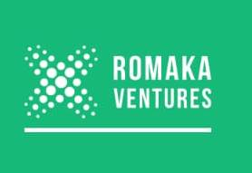

Farmer training
Farmers develop the knowledge needed to improve production, quality, farm management and market readiness.
- Good agronomic practices
- Post-harvest handling
- Business records & marketing

Capabilities
Practical support for horticultural farmers, quality produce and resilient rural livelihoods.
Farmers develop the knowledge needed to improve production, quality, farm management and market readiness.
Romaka receives farmers’ produce and prepares it for quality-conscious buyers and attractive markets.
Our pineapple-jam initiative creates a longer-lasting product, reduces post-harvest losses and opens new income opportunities.
We market fresh fruits and vegetables and support eco-tourism that brings visitors closer to farmers and their communities.
Work with us